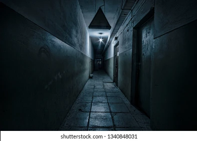
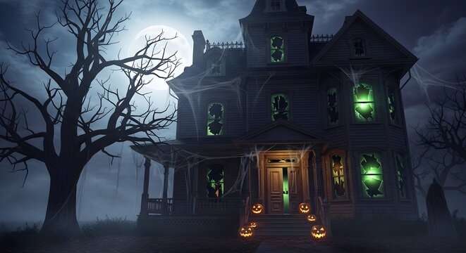
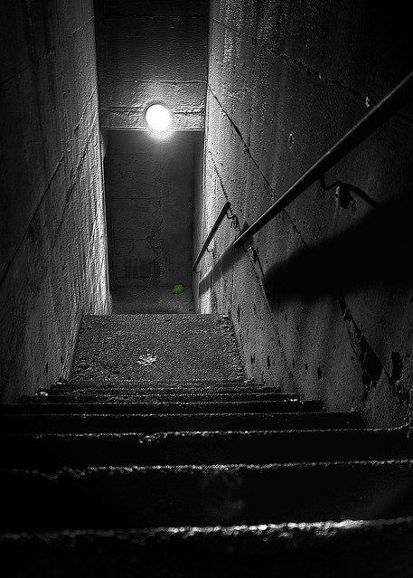

A mysterious house
Somebody says that the old house at the end of the road is mysterious and full of ghosts. It once belonged to a rich family,
but now nobody wants to live there. The house is vacant and completely uncared for.
My friend Jack and I were curious, but also a little afraid. Still, we decided to go and see it for ourselves. One evening,
we entered the house and prepared to spend the night there. We brought a strong flashlight, sleeping bags, food, and drinks.
At first, everything was quiet. We sat in the living room, but soon we felt scared. The house was dark and silent. Then we
heard something strange coming from the basement. It sounded like somebody was moving.
We freezed and listened. Suddenly, there was a loud crash upstairs, in the attic. Then we heard somebody scream.
We were terrified.
Jack quickly turned on the flashlight. We looked around, but we couldn’t see anything. Then, for a moment, we
saw something moving in the darkness. It looked like a ghost… or maybe a spirit. We were too scared to stay. We ran out
of the house as fast as we could. After that night, we promised never to go back there again.
The next day, we told everyone what had happened in the house. We said that we had heard something in the basement,
a loud crash in the attic, and that we had seen a ghost—or maybe a spirit. But nobody believed us.
Somebody laughed and said you were just too scared. Others thought we imagined everything because the house was
mysterious and dark. Even my uncle, who went back to the house to get our things, said there was nothing there—no
noise, no ghost, no spirit.
We tried to explain, but it was useless. People said we were afraid of something that didn’t exist.
Still, when I remember that night, I know we didn’t imagine it. There was definitely something—or somebody—in
that house. And whatever it was, it made us scream and run away.